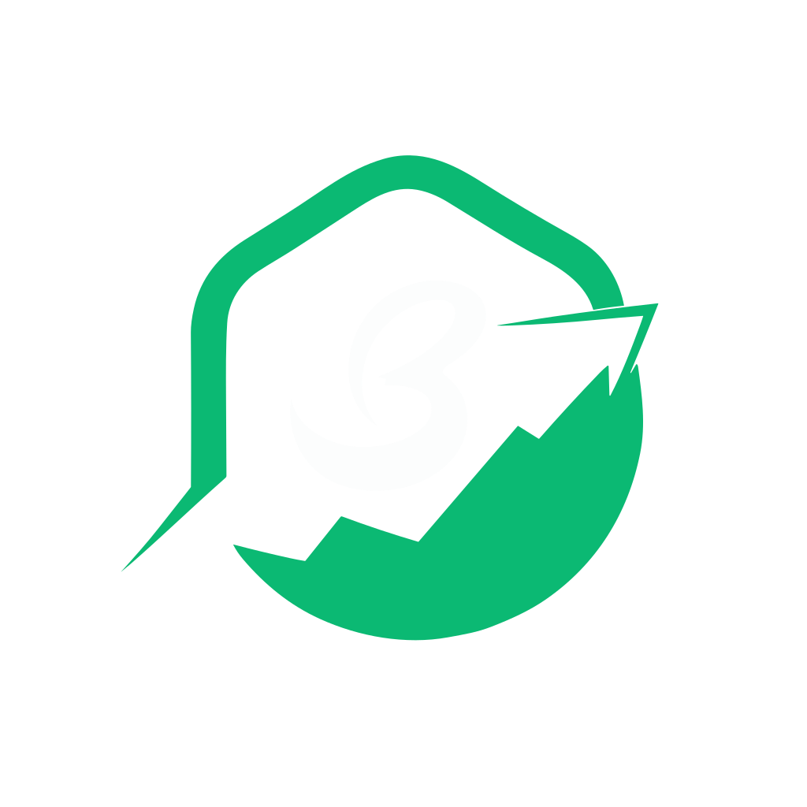

<nav
  class="flex items-center justify-between flex-wrap text-neutral-100 bg-[#1E1E1E] py-1 px-1 md:px-4"
>
  

  <div class="w-10 h-10 md:hidden" (click)="toggleMenu()">
    <svg
      class="hamburger-icon transition-transform"
      *ngIf="!isMenuOpen()"

      [ngClass]="{ 'hidden': isMenuOpen() }"
      xmlns="http://www.w3.org/2000/svg"
      viewBox="0 0 24 24"
      fill="none"
      stroke="currentColor"
      stroke-width="2"
      stroke-linecap="round"
      stroke-linejoin="round"
    >
      <path d="M3 12h18M3 6h18M3 18h18" />
    </svg>
    <svg
      class="cross-icon transition-transform"
      *ngIf="isMenuOpen()"
      xmlns="http://www.w3.org/2000/svg"
      viewBox="0 0 24 24"
      fill="none"
      stroke="currentColor"
      stroke-width="2"
      stroke-linecap="round"
      stroke-linejoin="round"
    >
      <path d="M6 18L18 6M6 6l12 12" />
    </svg>
  </div>

  <div class="hidden md:block">
    
  </div>
</nav>

<section
class="bg-[#1E1E1E] bg-opacity-95 absolute flex flex-col items-center text-neutral-100 w-full h-1/3 gap-y-4 menu transition-all md:hidden"
[ngClass]="{ 'closed': !isMenuOpen() }"
>
  <a class="text-2xl font-bold text-center my-4" routerLink="/"> Home </a>
  <a class="text-2xl font-bold text-center my-4" routerLink="#about"> About </a>
  <a class="text-2xl font-bold text-center my-4" routerLink="/contact">
    Contact
  </a>
</section>


<footer class="flex  px-4  items-center justify-between bg-[#1E1E1E]">
        <div class="hidden md:block">

        </div>
        <div class="flex gap-x-2 gap-y-2 text-center text-neutral-100">
                <a>Instagram |</a>
                <a>Facebook |</a>
                <a>Twitter</a>
        </div>

        
    
</footer>

```
